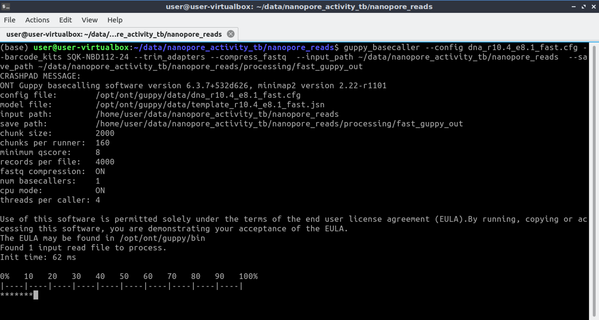

Nanopore Sequencing lecture
Nanopore Sequencing Practical
Introduction
In this session we are going to be looking at data generated by third-generation nanopore sequencing technology. Developed by Oxford Nanopore Technologies (ONT), these platforms, rather than the next-generation 'sequencing-by-synthesis approach', make use of an array of microscopic protein ‘pores’ set in in an electrically resistant membrane which guide strands of DNA or RNA through them. Each nanopore corresponds to its own electrode connected to a channel and sensor chip, which measures the electric current that flows through the nanopore. When a molecule passes through a nanopore, the current is disrupted to produce a characteristic ‘squiggle’. The squiggle is then decoded using basecalling algorithms to determine the DNA or RNA sequence in real time. Oxford Nanopore’s most popular platform is the MinION which is capable of generating single reads of up to 2.3 Mb (2.3 million bases).

The MinION is one of 5 scalable platforms developed by ONT. High-throughput applications such as the GridION and PromethION use an array of nanopore flowcells to produce between 5 to 48 times more data than the MinION alone – outputting up to 48 TB of data in one run. More downscaled solutions such as The Flongle and SmidgION use a smaller, single flowcell to generate data. The MinION is a highly portable sequencing platform, about the size of a large USB flash drive. This technology enables researchers to perform sequencing analyses almost anywhere, providing they have the correct equipment to prepare the DNA libraries and analyse the output data.
A complete sequencing run on the MinION platform can generate upwards to of 1TB of raw data, and downstream analyses require a significant amount of compute power – multicore high performance processors and large amounts of RAM. This poses a significant logistical challenge for researchers who want to take advantage of the platform’s portability aspect. Over recent years, the integration of GPUs (graphics processing units) in to analysis workflows.

Activity Briefing
Today we will be working with the data your group generated in the Nanopore Sequencing practical. Each group sequenced three samples, wild type (W), DMSO (D) and rapamycin (R) treated lines. You have been given your respective groups' sample data in your virtual environment, ready for analysis. Today, we are going to take this raw data and generate some insights to help further understand your parasite lines.
In this session today, we will:
- Basecall your data, transforming it from squiggle to bases.
- Perform quality control on the data, ensuring our data is of sufficient quality for analysis.
- Map the reads to a reference genome, producing three genomic alignment of our read sets.
- Perform variant calling on each of our alignments.
- Visualise the alignment and variant data in the IGV genome browser, to confirm insertion of a floxed PvDBP into the PkDBPα locus and successful DiCre-mediated excision of the floxed region.
- Produce coverage plots of each region, which will be used as a figure fro your manuscript report.
Basecalling
To convert the raw data output produced by the MinION sequencing run in to a usable form we need to perform a process called basecalling. This converts the raw electronic signal which is collected as the DNA passes through the pore, in to base reads – A, C, T or G. To do this we will use a program called Guppy – a software package designed by ONT which uses recurrent neural nets (RNN) to interpret the raw signal, which comes in a proprietary '.fast5' format file produced by the sequencer software and convert it in to the standard .fastq format, for use downstream in our pipeline. Users also have the choice of using the experimental Bonito basecaller which gives the option of training specialised models for specific basecalling applications. As mentioned above, GPUs are used to accelerate the basecalling process. Without a GPU performing basecalling becomes a very slow process, therfore it is advised that users procure a machine with a compatable Nvidia GPU (more information on this here).


Activate the relevant environment, navigate to the ~/data/ATMB/basecalling folder in the home directory, and we’ll start the first step.
IMPORTANT: Every time you open a new terminal window, you must re-activate the nanopore conda environment.>
conda activate nanopore
cd ~/data/ATMB/basecalling/raw_fast5_reads/ Use the ls command to see what is inside this folder. Use head to preview one of the fast5 files. As you might find, it's completely unreadable. This is because at this stage, the data is in a binary format representing the squiggle signal we spoke about previously. We need to basecall this data before we can use it.
Basecalling can be performed in a number of ways. There is an option to perform this while sequencing in the MinKNOW GUI package, however this software provides fewer options in the ways basecalling can be completed and is less powerful. Here, we will use Guppy for maximum flexibility. Since the machines we are working on do not have a GPU available we will have to use the two CPU cores available to us. Therefore, we will only basecall a subset (<1%) of the dataset as an example, and in the subsequent steps we will use a pre-basecalled output
Hover over the different elements of the basecalling command to see its function. Copy the whole line in to the terminal and execute the command:
guppy_basecaller --config dna_r9.4.1_450bps_fast.cfg --trim_adapters --detect_barcodes --compress_fastq --input_path ~/data/ATMB/basecalling/raw_fast5_reads --save_path ~/data/ATMB/basecalling/fastq You should now see the bascalling process begin, and a progress bar appear. This may take some time depending on the performance of your machine.

When the process in completed, you will find the basecalled reads in a .fastq formatted file. Navigate there by typing the following in to the terminal:
cd ~/data/ATMB/basecalling/fastq/passUse the ls command to see what is inside this folder. This directory holds the fastq formatted 'pass' reads from the basecalling process. The reads have a quality score > 7. Use zcat | head to preview the compresssed fastq file. Unlike the fast5 files, these are human-readable and contain all of the read data required for downstream analyses. Can you identify any of the common elements of a .fastq format files - similar to the ones you may have encountered in previous sessions? Click here to find out more about the FASTQ format.
Basecalling - Quality Control
Before moving on to the analysis steps, it is important to gauge the quality of your sequencing output. There are numerous factors which dictate the quality of the output data, spanning between quality of the input material, library preparation to software and hardware failure. We will look at some important metrics produced by the sequencer which will give us a feel for how well the run went.
In order to get the run metrics in to a useful form, we will use an pycoQC to produce a range of plots in a HTML output, which we will use to judge the quality of the sequencing run. Something to note, is that in this activity we will only use a small subset of the sequenced reads, or else the analysis would take all day. This subsetting means that the sequencing telemetry may look inconsistent, when compared to a full run.
pycoQC -f ~/data/ATMB/basecalling/fastq/.sequencing_summary.txt -o ~/data/ATMB/basecalling/fastq/pycoqc_results.htmlfirefox ~/data/ATMB/basecalling/fastq/pycoqc_results.htmlBefore continuing, quit firefox by clicking the X in the top right corner of the web-browser window.
Question 1
Question 2
Adapter Trimming
Nanopore library preparation results in the addition of a sequencing adapter at each end of the fragment. Both the template and complement strands to be sequenced carry the motor protein which means both strands are able to translocate the nanopore. For downstream analysis, it is important to remove these adapters. For this we will use Porechop. This program processes all of the reads in our basecalled fastq file, and removes these adapter sequences. Furthermore, the ligation library prep process can result in conjoined reads, meaning an adapter will be found in the middle of an extra-long read. Porechop will identify these, split them and remove the adapters. In addition, if you use a multiplexing kit to maximise sample throughput, this program will split the reads based on the molecular barcode added to each sample. Our dataset only has one sample, so this demultiplexing won't be necessary.
Let's launch porechop and remove the adapters from the basecalled fastq files. The RAP and DMSO files have already been done for you. First move up one directory, to where we have put the pre-basecalled files for you, then launch the command below that to run porechop on the WT dataset:
cd ~/data/ATMB/basecalling/fastqporechop -i ~/data/ATMB/basecalling/fastq/WT.fastq.gz -o WT.porechop.fastqRead the output of the terminal to understand better what porechop is doing to the dataset. Ask a demonstrator if you have any questions about this.
Kraken QC
Another method of quality control is to check our reads for sequence contamination from other 'off-target' organisms. This is important in order to firstly, understand how effective your DNA extraction, enrichment and sequencing was. And secondly, to prevent anomalous reads from being incorporated in to assemblies.
Using our basecalled reads we will perform an analysis using Kraken. Kraken is a tool which sifts through each read in a .fastq file and crosschecks it against a database of microorganism genomes. The output is a taxonomic assignment of each read, enabling to identify if any contamination has occurred. In this case we will be looking for any reads which do not belong to the Plasmodium knowlesi genome.
Let’s navigate to the kraken folder to begin the analysis:
cd ~/data/ATMB/krakenThe following line of code is composed of these elements:
Kraken – calling the Kraken executable
kraken --db ~/data/ATMB/kraken/KDB/ - this points kraken to a vast sequence database of relevant microorganisms to cross-check our reads against
--output temp.krak – this argument locates the output file
WT.porechop.fastq.gz – this argument locates the input file
As before, to save time, we will run Kraken on only one sample. Type the following command in to the terminal to unleash the Kraken:
kraken --db ~/data/ATMB/kraken/KDB/ --output temp.krak ~/data/ATMB/basecalling/fastq/WT.fastq.gz
This file isn't particularly easy to interpret, so we will use a program called Recentrifuge to transform these data in to a more human-readable format.
rcf -k temp.krak -o kraken_output.rcf.html --nodespath ./taxdumpTry opening the HTML file generated by recentrifuge in a web browser, what can you tell about the sequencing run? Was is successful? Note - due to constraints with the virtual machine, we have generated an alternative report, which can be loaded using the below command. Copy and paste it in to the terminal. If you have any questions about this, ask a demonstrator.
firefox .kraken_output.rcf.htmlQuestion 3
Mapping and Visualisation
Now that we have verified a successful sequencing run, our basecalled and trimmed Plasmodium-confirmed data are ready to go, we will now map the reads on to a reference genome and perform variant calling.
Mapping tools are not to be confused with other sequence alignment tools, such as clustalO or MUSCLE. These are designed for a totally different use case and input data. Using these will not work on whole-genome read data.
Move to the mapping directory:
cd ~/data/ATMB/mappingNow we can use minimap2 to align our QC completed, porechopped reads. Minimap2 is an alignment tool specifically designed to map error-prone nanopore reads. You might have used an alignment too previously, such a BWA. You can find more information about this tool by clicking the link comparing the two alignment tools
minimap2 -ax map-ont ~/data/ATMB/mapping/Pknowlesi_A1H1_WT_DiCre.fa ~/data/ATMB/basecalling/fastq/DMSO.porechop.fastq > DMSO_alignment.samAs before, we now need to convert our alignment .sam file in to a .bam formatted file:
samtools view -q 10 -b -S DMSO_alignment.sam > DMSO_alignment.bamNext, we need to sort the .bam formatted file:
samtools sort DMSO_alignment.bam -o DMSO_sorted.bamFinally we need to index the sorted bam file:
samtools index DMSO_sorted.bamRepeat each of the above mapping steps, from the first minimap2 command for the RAP and WT lines. Be sure to modify each command to have the correct input and output lines.
Visualisation using IGV
Now that we have successfully mapped the reads to a reference we can visualise them in IGV, to get a closer look at what our sequencing data looks like. We also add the GFF file for our genome. This contains all of the annotation metadata, such as gene names, coding regions etc.
The Integrative Genomics Viewer (IGV) is a high-performance, easy-to-use, interactive tool for the visual exploration of genomic data. It is a staple for the bioinformatician when assessing genome alignments from whole genome sequencing data.
Open IGV from the terminal:
igvGo to the 'Genomes' dropdown at the top of the IGV window, load a genome from file, navigate to /home/user/data/ATMB/mapping by copying the bold text in to the 'File name' field and select Pknowlesi_A1H1_WT_DiCre.fa.
From the 'File' dropdown, open your sorted and indexed BAM file from the mapping steps by choosing 'Load from file', and navigate to the same mapping directory and choose, for example, 'DMSO_sorted.bam'. Finally, from the same directory and menu, open 'PknowlesiA1H1.gff'.
Now that you have loaded the reference genome, the BAM read alignment and the GFF annotation track, your IGV window should look a little bit like the image below. Explore the functions of IGV and browse the Pk A1H1 genome.
head -n 100 ~/data/ATMB/mapping/PknowlesiA1H1.gff Minimise the IGV window, leave open the terminal which launched it. Open a new terminal, activate the nanopore environment and move to the next steps.
Coverage, Depth and Variant Calling
conda activate nanoporeBefore starting on variant calling, we first need to do one more QC step. This analysis will tell us how well our reads have aligned to the reference and how comprehensive our sequencing run was. Two key metrics are required for this: reference coverage and read depth. Read coverage tells us the percentage of the reference which has had sequencing reads aligned to it, which allows us to identify any regions that may have not been successfully sequenced. Depth is an equally as important metric: it tells us how many different reads have mapped to the same position. This is a particularly important statistic if you intend on doing variant calling, as regions with low depth may fall prey to false calls due to the random errors we have in our nanopore data. With a high enough read depth, we can be fairly sure that these errors will be ignored. If you find this confusing, think of the alignment as a 2-dimentional plot. The X-axis is the length of the genome, this relates to coverage. The depth is the Y-axis, how deep the reads are at a given position.
Navigate to the ‘variant_calling’ folder and we’ll begin:
cd ~/data/ATMB/variant_calling We will use a variant caller called freebayes. Freebayes is a Bayesian genetic variant detector designed to find small polymorphisms, specifically SNPs (single-nucleotide polymorphisms), indels (insertions and deletions), MNPs (multi-nucleotide polymorphisms), and complex events (composite insertion and substitution events) smaller than the length of a short-read sequencing alignment.
freebayes -f ~/data/ATMB/mapping/Pknowlesi_A1H1_WT_DiCre.fa ~/data/ATMB/mapping/DMSO_sorted.bam -F 0.5 -C 10 -r LT727654:329600-329932 -u > DMSO_variants.vcf -F – This command tells the program the location of the reference file, so the procram can compare the alignment against it inorder to make the calls.
-F – specifies the minimum frequency of a call. To eliminate errors, we set this to 0.5. That means that 50% of the reads have to agree with a particular alternative allele (variant)
-C – specifies the minimum read depth of a variant call. (More on this later)
-r – specifies the region in the genome to be called. We can not perform variant calling on the whole genome bacause it would take a very long time, and a more powerful computer.
Once the variant callerhas finished, take a look inside the VCF file to see what kind of data it contains:
head -n 50 DMSO_variants.vcf Check out this page to unserstand the structure of a VCF file
Go back to IGV and load the VCF in to the window by navigating to the variant_calling folder through the File>Load from file menu, and selecting DMSO_variants.vcf
Navigate to the locus of the variant by copying LT727654:329600-329632 in to the navigation form. You should see seomthing like that in the image below:
Question 4
Validation of PvDBP insertion
Now load the other two BAMs you mapped in to IGV, using the same method you used to load the DMSO sample. Load the RAP.sorted.bam and the WT.sorted.bam files. Adjust the display ratios by dragging the partitions beteen the three BAM tracks and zoom out to 50% using the zoom slider in the top right corner. Have a look at the video below if you need help.
In to the navigation form at the top of the IGV window, write PKA1H_060029200, this is a unique desegnation assigned to the Plasmodium knowlesi erythrocyte binding protein, the locus in the genome you have been working with throughout the module. You can find more information on this by visiting its PlasmoDB page.
We need to use Samtools, a versatile package used in all facets of genomics, to extract the depth statistics from the .bam alignment file we generated in the previous section. This will generate a file called ‘depth_statistics’. Samtools will scan across the alignment counting how many reads have mapped to each base in the genome.
samtools depth ~/data/ATMB/mapping/DMSO_sorted.bam > depth_statisticsTake a look at the depth_statistics file using the
headNext, we will use the R statistical package to generate a plot based on the data samtools generated. Simply type ‘R’ in to the terminal to initialise the R interface.
R
Once you have initialised R, you can enter the following two lines of code, one after the other. The first command will load the ‘depth_statistics’ file, and the second will generate the plot
data<-read.table("depth_statistics")plot(data$V3,type="l",xlab="Reference Position", ylab="read Depth")You can quit R by typing:
quit()